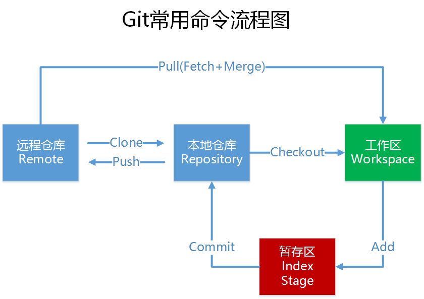
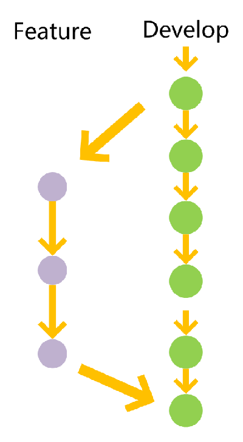

常用命令

-
设置账号和邮箱
git config --global user.name "xxx" git config --global user.email "xx@xx.com" -
git init在当前目录创建一个版本库
-
git add <path>主要用于把我们要提交的文件的信息添加到暂存区（stage）中，当我们使用
git commit时，git将依暂存区中的内容来进行文件的提交 -
git commit把修改（暂存区）提交到版本库中。一般使用
git commit -m "message"。如果你的文件之前已经提交过，但这次的改动还没有进stage，可以使用git commit -am "message"和先add再commit的效果一样 -
git log查看HEAD指向的分支的log，
--pretty=oneline简略查看 -
git reflog可以查看所有分支的所有操作记录
-
git reset在本地仓库中回退到某个commit
-
git reset –mixed此为默认方式，不带任何参数的
git reset，即时这种方式，它回退到某个版本，只保留源码，回退commit和index信息 -
git reset –soft回退到某个版本，只回退了commit的信息，不会恢复到index file一级。如果还要提交，直接commit即可
-
git reset –hard彻底回退到某个版本，本地的源码也会变为上一个版本的内容
-
-
git checkout把文件在工作区的修改全部撤销，这里有两种情况：
一种是readme.txt自修改后还没有被放到暂存区，现在，撤销修改就回到和版本库一模一样的状态；
一种是readme.txt已经添加到暂存区后，又作了修改，现在，撤销修改就回到添加到暂存区后的状态。
-
git rm
从版本库删除文件
-
git clone <url>从远程仓库克隆一个项目
一次 Git 克隆会建立你自己的本地分支 master 和远程分支 origin/master，并且将它们都指向 origin 上的 master 分支。
-
git remote add origin <url>把本地项目与远程项目关联
-
git push origin master把本地master分支推动到远端的origin（相当于本地的HEAD）
-
git pull从远端抓取并试图合并
-
git branch <name>创建一个分支
-
git checkout <name>切换到某个分支，
git checkout -b <name>创建同时切换到分支 -
git branch列出所有分支，当前分支前面会标一个*号
-
git merge <name>把某个分支合并到当前分支,默认是快速合并,有时候要解决冲突
Git 默认使用快进式合并（fast-farward merge），只是将 master 分支指针指向 bugfix-0.1分支，而使用
git merge --no-ff name了则会创建一条合并日志，保证分支删除时不丢失历史日志对应的tortoisegit合并分支选项是非Fast Forword
-
git branch -d branchName删除分支，有时候完成合并后，不需要了就可以删除了因为创建、合并和删除分支非常快，所以Git鼓励你使用分支完成某个任务，合并后再删掉分支，这和直接在master分支上工作效果是一样的，但过程更安全。
-
git tag tagName创建标签，默认标签是打在最新提交的commit上的
-
git tag -d tagName删除标签
-
git push origin v1.0推送标签
分支管理策略
-
主分支Master
首先，代码库应该有一个、且仅有一个主分支。所有提供给用户使用的正式版本，都在这个主分支上发布。
Git主分支的名字，默认叫做Master。它是自动建立的，版本库初始化以后，默认就是在主分支在进行开发。

-
开发分支Develop
主分支只用来分布重大版本，日常开发应该在另一条分支上完成。我们把开发用的分支，叫做Develop。
如果想正式对外发布，就在Master分支上，对Develop分支进行”合并”（merge）

-
临时性分支
用于日常开发
-
功能（feature）分支

-
预发布（release）分支
-
修补bug（fixbug）分支

-
GitHub
配置ss登陆
多人协作
有三种方法
-
把别人的公钥加到你项目的公钥
-
建一个组织，这样组织中的所有人都有提交权限
-
别人fork你的项目，然后给你发 pull request